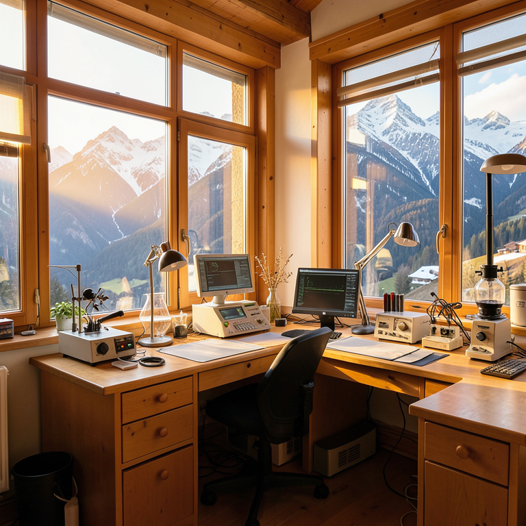
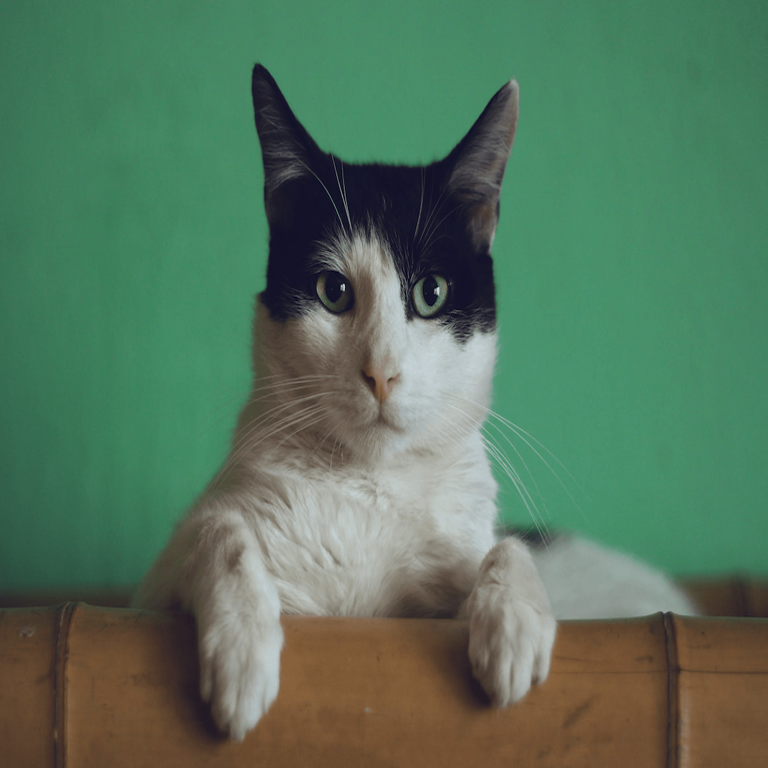
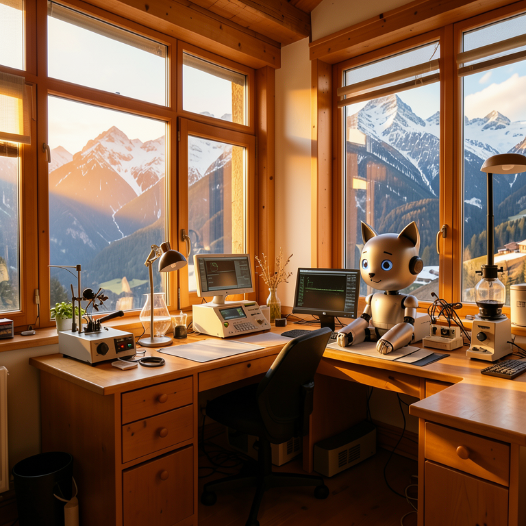
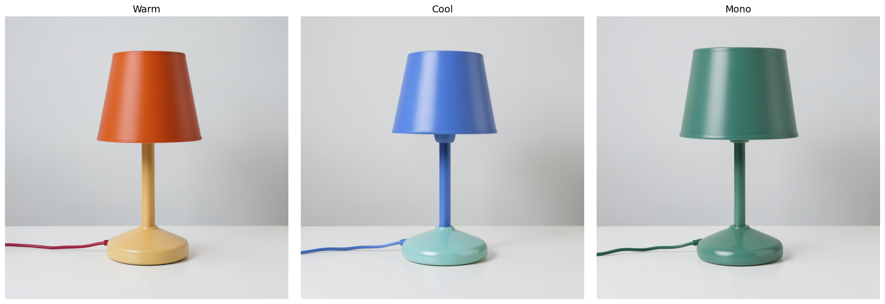
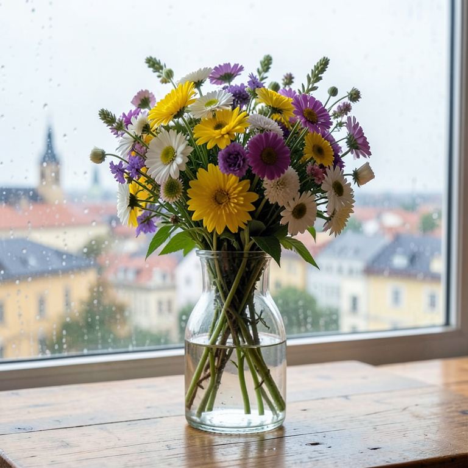
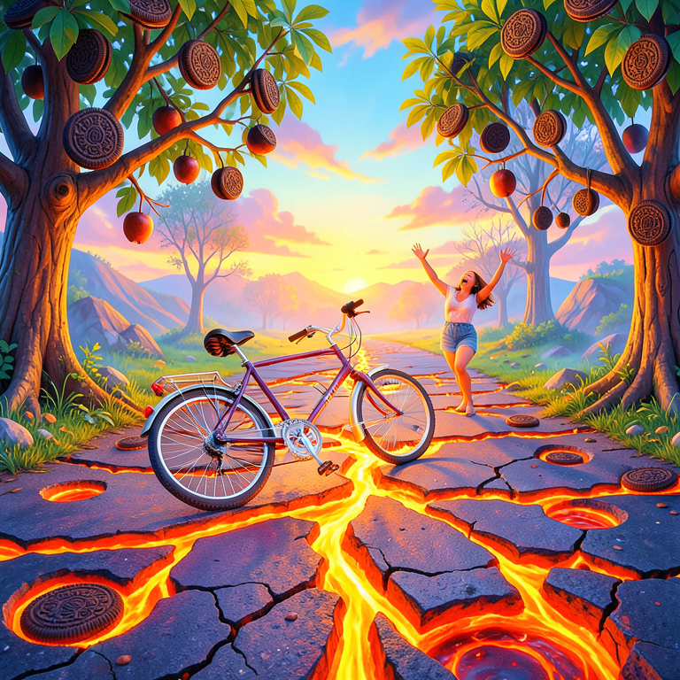
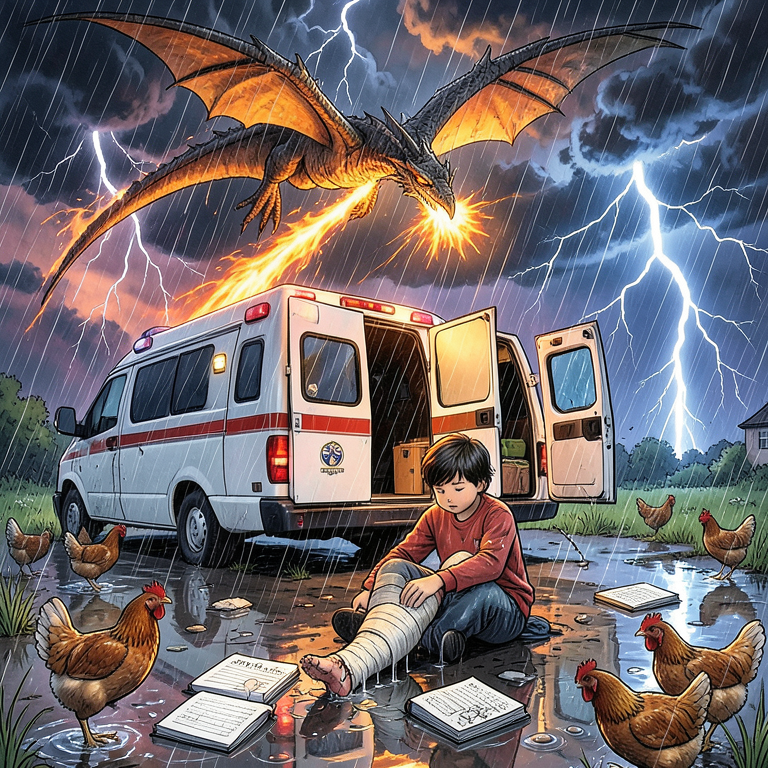

Code
!uv pip install -qU diffusers transformers accelerate safetensors sentencepiece huggingface_hub pillowGregor Cerar
2026-05-21
2026-06-27
A short practical notebook showing several FLUX.2-klein-4B use cases: text-to-image generation, image editing, multi-reference composition, exact color control, and structured prompting.
FLUX.2 is a family of rectified-flow image models by Black Forest Labs. This notebook uses the smaller black-forest-labs/FLUX.2-klein-4B checkpoint through Hugging Face diffusers.
Klein is the practical local variant: the 4B model is open-weight, Apache-2.0 licensed, and designed for consumer GPUs. It still supports the main image workflows we want for a compact demo:
The defaults below use 768 x 768 images and 4 denoising steps to keep the example lighter. If your GPU has enough VRAM, try 1024 x 1024 for the model-card default resolution.
Install recent versions of the required packages. At the time of writing, FLUX.2 Klein support may require a very recent diffusers release:
Flux2KleinPipeline can be called with only a prompt for text-to-image generation, or with image=... for reference-guided editing/composition.
Warning: You are sending unauthenticated requests to the HF Hub. Please set a HF_TOKEN to enable higher rate limits and faster downloads.def run_flux2(prompt, image=None, seed=SEED, show=False, **kwargs):
generator_device = device if device == "cuda" else "cpu"
generator = torch.Generator(device=generator_device).manual_seed(seed)
result = pipe(
prompt=prompt,
image=image,
width=WIDTH,
height=HEIGHT,
guidance_scale=GUIDANCE_SCALE,
num_inference_steps=NUM_INFERENCE_STEPS,
max_sequence_length=512,
generator=generator,
**kwargs,
)
out = result.images[0]
if show:
display(out)
return outThis is the simplest use case: describe a scene and let the model synthesize it from scratch.
text_to_image_prompt = (
"A cozy research lab in the Slovenian Alps, large windows, warm afternoon light, "
"scientific instruments on wooden desks, realistic photography, detailed textures"
)
display(Markdown(f"*{text_to_image_prompt}*"))
text_to_image = run_flux2(text_to_image_prompt)
text_to_imageA cozy research lab in the Slovenian Alps, large windows, warm afternoon light, scientific instruments on wooden desks, realistic photography, detailed textures

Pass one image with image=... and describe the change. The reference can be a local PIL.Image or an image loaded from a URL.

Turn this cat into a small friendly robot cat while preserving the same pose, camera angle, and simple studio background. Brushed aluminum surface, soft blue eyes.
FLUX.2-klein-4B supports multi-reference editing. In practice, this is useful for combining a subject, a product, a pose, or a style without training a LoRA.
The example below uses the generated lab as one reference and the edited robot cat as another. Replace these with your own product, character, style, or scene references for a real workflow.
multi_reference_prompt = (
"Create a polished editorial image of the robot cat from the second reference sitting inside "
"the warm alpine research lab from the first reference. Keep the robot cat identity consistent, "
"match the room lighting, realistic photography, 35mm lens."
)
display(Markdown(f"*{multi_reference_prompt}*"))
multi_reference = run_flux2(
multi_reference_prompt,
image=[text_to_image, edited_image],
seed=SEED + 1,
)
multi_referenceCreate a polished editorial image of the robot cat from the second reference sitting inside the warm alpine research lab from the first reference. Keep the robot cat identity consistent, match the room lighting, realistic photography, 35mm lens.

FLUX.2 models support prompts with explicit hex colors. This is handy for brand mockups, product studies, and controlled design variations.
palettes = [
{"label": "Warm", "shade": "#FF6B35", "base": "#FFD166", "cord": "#EF233C"},
{"label": "Cool", "shade": "#4C95F5", "base": "#34EBE5", "cord": "#0077B6"},
{"label": "Mono", "shade": "#2D6A4F", "base": "#52B788", "cord": "#1B4332"},
]
color_images = []
for p in palettes:
prompt = (
f"Minimal product photo of a ceramic desk lamp on a matte white table. "
f"The lamp shade is exactly {p['shade']}, the base is exactly {p['base']}, "
f"and the power cord is exactly {p['cord']}. Softbox lighting, clean shadows."
)
display(Markdown(f"**{p['label']}:** *{prompt}*"))
img = run_flux2(prompt, seed=SEED + 2, show=False)
color_images.append((img, p["label"]))
fig, axes = plt.subplots(1, 3, figsize=(18, 6))
for ax, (img, label) in zip(axes, color_images, strict=True):
ax.imshow(img)
ax.set_title(label, fontsize=14)
ax.axis("off")
plt.tight_layout()
plt.show()Warm: Minimal product photo of a ceramic desk lamp on a matte white table. The lamp shade is exactly #FF6B35, the base is exactly #FFD166, and the power cord is exactly #EF233C. Softbox lighting, clean shadows.
Cool: Minimal product photo of a ceramic desk lamp on a matte white table. The lamp shade is exactly #4C95F5, the base is exactly #34EBE5, and the power cord is exactly #0077B6. Softbox lighting, clean shadows.
Mono: Minimal product photo of a ceramic desk lamp on a matte white table. The lamp shade is exactly #2D6A4F, the base is exactly #52B788, and the power cord is exactly #1B4332. Softbox lighting, clean shadows.

Structured prompts make image generation easier to automate because each field has a clear role. The pipeline still receives text; we simply format that text from a Python dictionary.
structured_prompt = {
"subject": "a wildflower bouquet in a clear glass vase on a wooden table",
"background": "Ljubljana skyline visible through a rainy window",
"lighting": "soft morning light with subtle reflections",
"style": "realistic product photography",
"composition": "three-quarter view, vase centered, shallow depth of field",
"details": "water droplets on the glass, petals in shades of yellow, purple, and white",
}
prompt_from_structure = "\n".join(f"{key}: {value}" for key, value in structured_prompt.items())
display(Markdown(f"*{prompt_from_structure}*"))
structured_output = run_flux2(prompt_from_structure, seed=SEED + 3)
structured_outputsubject: a wildflower bouquet in a clear glass vase on a wooden table background: Ljubljana skyline visible through a rainy window lighting: soft morning light with subtle reflections style: realistic product photography composition: three-quarter view, vase centered, shallow depth of field details: water droplets on the glass, petals in shades of yellow, purple, and white

With one Flux2KleinPipeline, FLUX.2-klein-4B covers the core image workflows most useful in a lightweight notebook:
The trade-off is simple: Klein is much smaller and faster than FLUX.2-dev, while dev remains the higher-quality but much heavier developer model.
These two images were generated from prompts assembled in a second-grade classroom. Each child contributed one or two words, and the class combined them into a single scene. The original prompts are in Slovenian.
# Original (sl): "Kolo se pelje po cesti in pade na tla. Cesta je oblita z lavo, veliko lukenj,
# v daljavi vpije mami, na drevesih rastejo oreo piškoti."
#
# Fast translation (partial): "Bycicle is driving on a road. Bycicle falls on the ground.
# On the road, there is lava, and lot of holes. In a distance
# woman is screaming. On nearby trees, there are Oreo cookies."
prompt_kids_1 = (
"A bicycle tumbling and falling on a road cracked open with glowing orange lava, "
"large holes scattered across the surface. Oreo cookies growing from nearby tree branches "
"like fruit. A woman far in the distance throwing her arms up and screaming. "
"Vivid surreal scene, bright colours."
)
display(Markdown(f"*{prompt_kids_1}*"))
run_flux2(prompt_kids_1)A bicycle tumbling and falling on a road cracked open with glowing orange lava, large holes scattered across the surface. Oreo cookies growing from nearby tree branches like fruit. A woman far in the distance throwing her arms up and screaming. Vivid surreal scene, bright colours.

# Original (sl): "Rešilec pomaga ker imam zlomljeno nogo. raztreščeni zvezki matematike.
# kokoške ki tečejo. na nebu zmaj ki bruha ogenj. močan dež in strele."
#
# Fast translation (partial): "A boy with broken leg. Hospital van is helping him.
# Math books all around on ground. Running chickens in the
# background. On sky is dragon breathing fire. Heavy rain
# with lightnings."
prompt_kids_2 = (
"A child sitting on wet ground with a broken leg in a cast, a white ambulance with open "
"rear doors parked beside them. Math exercise books scattered and soaking in puddles. "
"Several chickens sprinting in all directions. A large dragon swooping through dark storm "
"clouds above, breathing bright orange fire. Heavy rain with jagged lightning bolts. "
"Chaotic vivid surreal illustration."
)
display(Markdown(f"*{prompt_kids_2}*"))
run_flux2(prompt_kids_2)A child sitting on wet ground with a broken leg in a cast, a white ambulance with open rear doors parked beside them. Math exercise books scattered and soaking in puddles. Several chickens sprinting in all directions. A large dragon swooping through dark storm clouds above, breathing bright orange fire. Heavy rain with jagged lightning bolts. Chaotic vivid surreal illustration.
